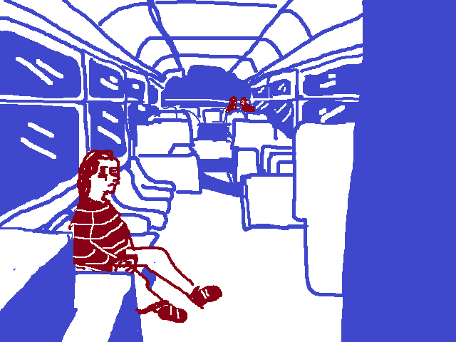

Yes, it was true that Kirkland and the Greater Seattle area was almost infamous for its inefficient bus services. But it couldn’t be that hard, right? Two buses? Forty minute ride? Easy. You text your classmate you’re gonna be about half-an-hour late.
You swing your backpack around your shoulders and step out into the morning sun. The bus stop isn’t too far from your house, you should be fine just walking normally. You pop in your earbuds and start moving. This is the street you grew up on, and you’ve watched it change over time. The houses have been getting bigger, more expensive.
You make it to the stop just as the bus is pulling up. You step onto it. It’s nearly empty, except for two girls around your age sitting in the back, and an older man near the front. You tap your ORCA card, now you just need to decide where to sit.
